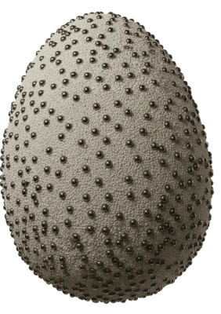
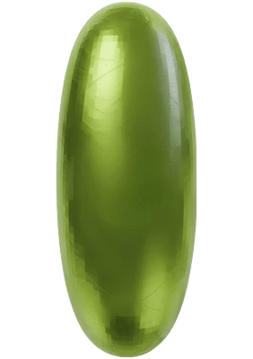
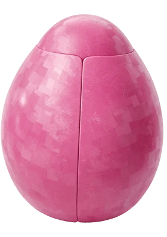
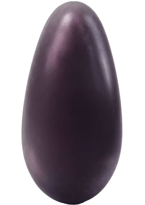

Vibe coding

Interfaces

Graphics & 3D

Experiments

Born in Ivanovo. Now living in Moscow.
Focused on form and function. Driven by curiosity.
Now at Yandex Market as a Product Designer.
Designed and developed my own app — CMSHT.
Bachelor’s Degree in Design and Programming + DW200 Crew 4 Alumni.
Also like Dinosaurs, Naruto and The Office.



